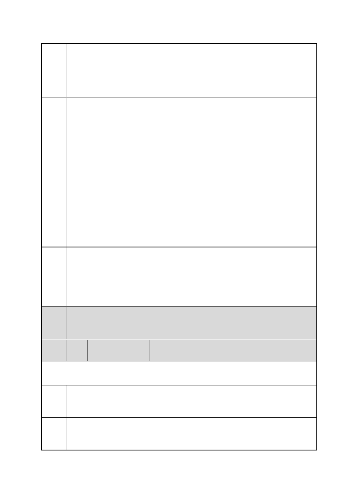

臺北市都市計畫委員會 公民或團體陳情意見綜理表
案
名
市府
回應
委員
會議
決議
編
號
「變更臺北市信義區逸仙段二小段 33 地號等 21 筆土地（原臺北機廠）
工業區為創意文化專用區、特定專用區、道路及綠地用地主要計畫案」
及「擬定臺北市信義區逸仙段二小段 33 地號等 21 筆土地（原臺北機
廠）創意文化專用區、特定專用區、道路及綠地用地細部計畫暨劃定
都市更新地區計畫案」
流，各自適切發展，才能真正替全民守護臺北機廠和鐵路局這兩大公
共資產！
【註】客車工場、車件工場、電三工場、鈑金工場都屬車輛工區，依
照維修流程將工區分為一個個工作站。電聯車進入客車工場後隨即拆
解，車身與車廂內設備留下繼續維修、裝配，卸下的零件送往其他工
場檢查、更新，最後在客車工場重組出廠。為有效利用廠區空間，車
件工場與客車工場東側設有遷車臺，以便將維修車輛移到下個維修
點。
5.台鐵應儘速開放臺北機廠辦理導覽等環境教育活動。
現下，正是開放社群/區參與的最佳起點，臺北機廠已無工廠運作之
實，除短期配合文化局辦理之鐵道文化節外，廣大市民對北廠的親近
不得其門而入。鐵路局不應將寶貴的文化資產封閉，大可配合公民團
體，辦理北廠導覽員培訓，定期辦理市民入廠導覽，以擴大社群／區
的參與基礎，爭取更多關注及認同。
一、有關本計畫規劃過程及程序，詳如編號 12 市府回應說明一。
二、有關本計畫是否須辦理環境影響評估，詳如編號 13 市府回應說
明四。
三、有關臺北機廠再利用之定位，詳如編號 2 市府回應內容。
四、有關提高綠地面積之建議，詳如編號 35 市府回應說明五。
內容同編號 1。
50 陳情人
林○臻
第 1 次陳情
陳情
理由
建議
辦法
1.請為了都市更新發展的完整性和長遠性著想。
2.52 弄工業區原本就併列於臺北機廠工業區中，卻在變更中排除在
外，長遠會造成住戶權益受損。
1.請將 52 弄唯一遺留下來的工業 3 併入此次臺北機廠都更案中合併
變更。
2.52 弄現在 50 多戶住戶，此區塊未來何去何從，必須給予明確的交
第 61 頁/共 154 頁